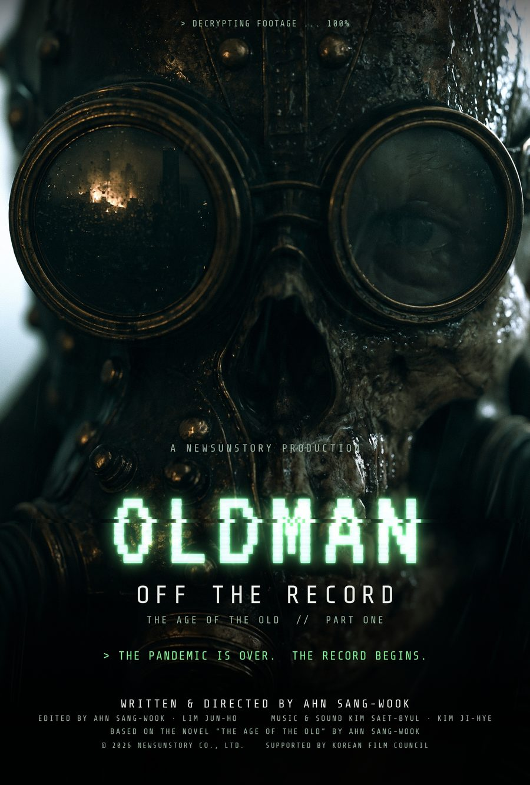
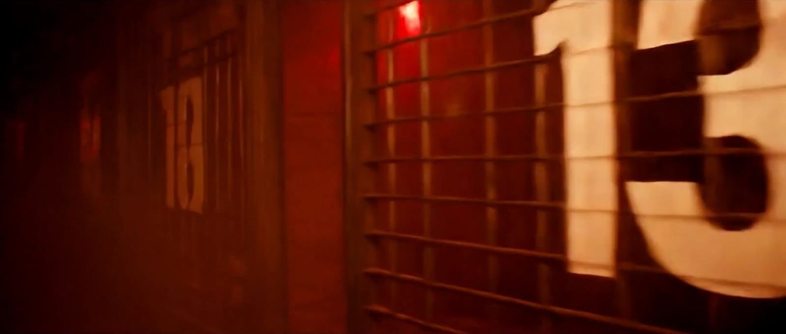
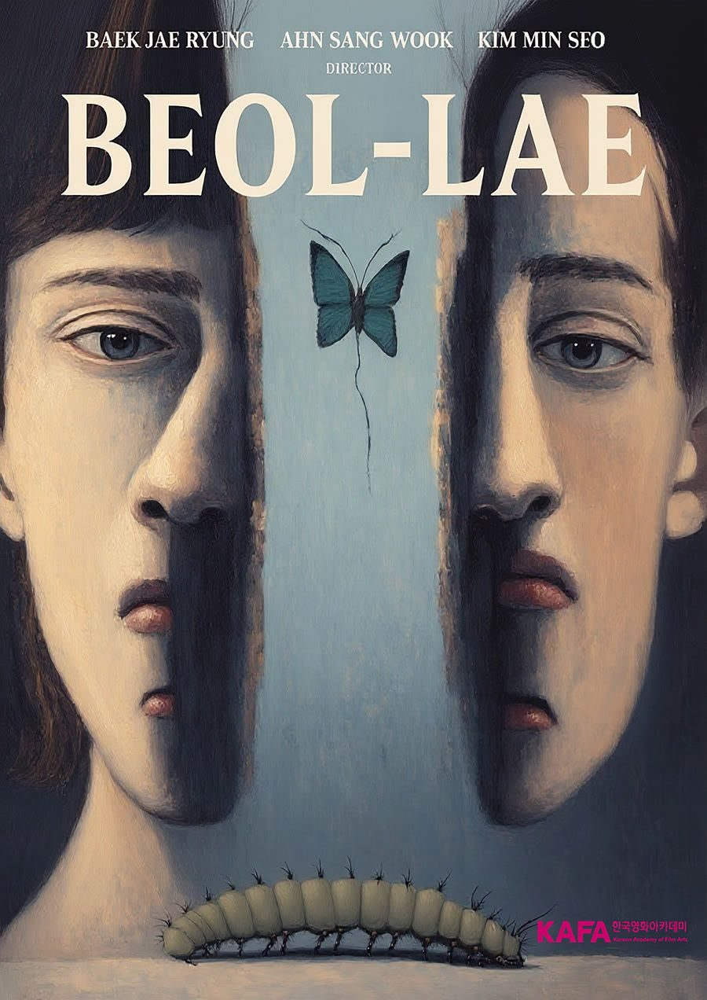
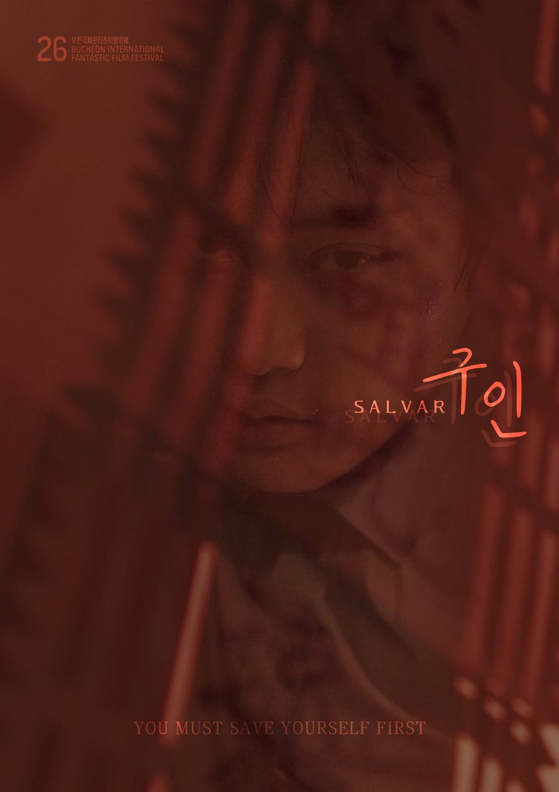
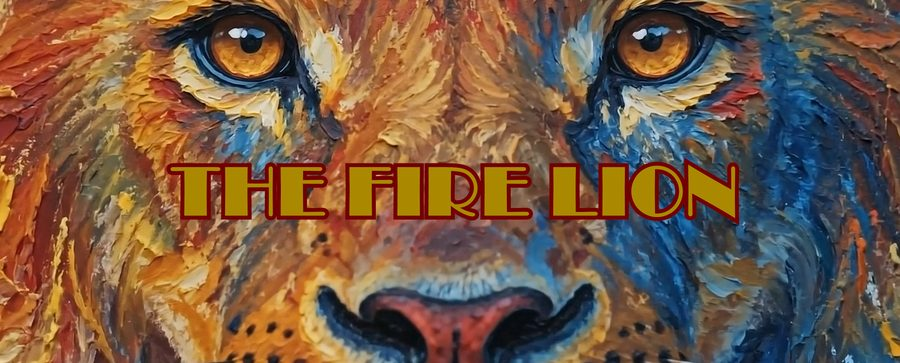

프레스룸Press Room
영화제·언론용 자료입니다. 포스터·스틸·한 장짜리 EPK(PDF)를 내려받을 수 있습니다.Materials for festivals and press. Posters, stills and one-page EPKs (PDF) are free to download.
올드만 – 기록되지 않은 기억OLDMAN – Off the Record

익명의 해커가 세상이 봐서는 안 될 기록을 흘린다. 영원을 약속한 팬데믹 "치료제" 이후 노인들은 껍데기로 버려졌다 — 그중 한 명이 돌아오기 전까지는.An anonymous hacker leaks the footage the world was never meant to see: after a pandemic "cure" that promised eternity, the old were discarded as empty shells — until one of them came back.
- 연도
- 2026
- 러닝타임
- 14:59
- 장르
- SF · 페이크 다큐멘터리 · 파운드 푸티지
- 원작·연작
- 『노인의 시대』 3부작 1부
- 화면비
- 2.35:1 (1920×1080)
- 언어
- 영어
- 자막
- 영어 / 한국어
- 제작국
- 대한민국
- 상태
- 영화제 출품 중 · 월드 프리미어 가능
- Year
- 2026
- Runtime
- 14:59
- Genre
- Sci-fi · Fake documentary · Found footage
- Source
- Part One of the trilogy The Age of the Old
- Aspect ratio
- 2.35:1 (1920×1080)
- Language
- English
- Subtitles
- English / Korean
- Country
- South Korea
- Status
- On the festival circuit · World premiere available
시놉시스Synopsis
〈올드만 – 기록되지 않은 기억〉은 유출된 감시 카메라·방송·녹음을 이어 붙인 파운드 푸티지 단편이다. 화자는 그 기록을 훔친 해커다. 팬데믹은 공식적으로 끝났다. 바이올리온이라는 기업은 치료제가 아니라 "영원"을 팔았다. 그러나 백신과 그 약을 함께 맞은 몸 안에서 무언가가 뒤집히기 시작한다. 가장 먼저 변한 것은 노인들이었고, 가장 먼저 버려진 것도 노인들이었다. 그중 한 명이 타지 않았다. 도시의 모든 카메라가 한 사람만 찾기 시작했고, 그들이 그를 찾아냈을 때 그의 피는 이미 비가 되어 내리고 있었다.
OLDMAN – Off the Record is a found-footage short assembled from leaked surveillance feeds, broadcasts and recordings, narrated by the hacker who stole them. The global pandemic is officially over. A corporation called Biolion did not sell a cure — it sold forever. But inside the bodies of those who took both the vaccine and the drug, something began to turn. The old were the first to change, and the first to be thrown away. One of them did not burn. The cameras of the whole city began looking for a single man, and by the time they found him, his blood was already falling as rain.
짧은 시놉시스 (출품서용)Short synopsis (≈50 words)
팬데믹은 끝났고, 바이올리온은 "영원"을 팔았다. 그 약을 맞은 노인들이 가장 먼저 변했고, 가장 먼저 버려졌다. 유출된 감시 영상과 방송을 이어 붙인 이 기록의 끝에서, 타지 않은 노인 한 명이 돌아온다.
The pandemic is over, and a corporation called Biolion sold forever. The old who took the drug were the first to change and the first to be discarded. Stitched together from leaked surveillance feeds and broadcasts, this hacker's record ends with the one old man who refused to burn.
연출의 말Director's Statement
시스템이 가장 먼저 버리는 사람들에 대한 영화를 만들고 싶었다. 〈올드만〉은 "이미 끝난 삶"이라는 말을 글자 그대로 받는다 — 노인을 연료로 재활용하는 세계, 그리고 타기를 거부한 노인 한 명. 거의 모든 이미지가 AI로 생성되어 컷마다 조금씩 다르다. 그걸 숨기는 대신 핵심으로 삼았다. 이것은 해커가 훔친 소문과 파편이고, 올드만에 대한 기억은 누구의 것도 일치하지 않는다.
I wanted to make a film about the people a system throws away first. OLDMAN takes the phrase "a life already finished" literally: a world that recycles its elders as fuel, and one old man who refuses to burn. Almost every image was generated with AI, each slightly different from the last. Instead of hiding that, I made it the point: these are rumors and fragments stolen by a hacker, and nobody's memory of Oldman agrees.
영화제·지원Festivals & Support
- 영화진흥위원회 2026 AI 기반 영화 제작지원작
- Korean Film Council (KOFIC) 2026 AI-based Film Production Program
AI 사용 고지AI Disclosure
Produced primarily with generative AI tools under the direction of a single filmmaker. Story, script, editing and all creative decisions are human-authored.
Credits
- Written & Directed by
- 안상욱 AHN SANG-WOOK
- Based on the novel
- 『노인의 시대』 The Age of the Old — Chapter One 「올드만의 기억」
- Produced by
- NewSunStory Co.,Ltd.
- Edited by
- Ahn Sangwook, Lim Jun-ho
- Music & Sound
- Kim Saet-byul
- AI Collaboration
- Claude (Anthropic)
- AI Generation
- Midjourney · Higgsfield · Veo · Nano Banana Pro · Imagen · ElevenLabs
- Supported by
- Korean Film Council (KOFIC) — 2026 AI-based Film Production Program
스틸 — 눌러서 내려받기Stills — click to download


신곡 – 지옥의 라이브INFERNO – LIVE

심장에 자폭장치를 꿰맨 한 사람이 지하 일곱 층을 지나 위로 올라간다. 그 모든 길이 생중계된다.A man with a bomb stitched into his heart climbs up through seven underground levels — and every step is broadcast live.
- 연도
- 2026
- 러닝타임
- 10:00
- 장르
- SF · 1인칭 생중계
- 원작·연작
- 『노인의 시대』 3부작 3부 · 원작 3장 「야만의 시대」
- 화면비
- 2.35:1 (1920×1080)
- 언어
- 한국어 · 이탈리아어 · 독일어 · 일본어 · 중국어 · 러시아어 · 영어
- 자막
- 한국어 / 영어
- 제작국
- 대한민국
- 상태
- 완성 · 영화제 상영 전 (영상 비공개)
- Year
- 2026
- Runtime
- 10:00
- Genre
- Sci-fi · First-person live broadcast
- Source
- Part Three of The Age of the Old — after Chapter Three, "The Age of Savagery"
- Aspect ratio
- 2.35:1 (1920×1080)
- Language
- Korean · Italian · German · Japanese · Chinese · Russian · English
- Subtitles
- Korean / English
- Country
- South Korea
- Status
- Completed · Festival premiere pending (screener on request)
시놉시스Synopsis
삼십 년 전, 일곱 층, 문 하나. 노인들이 지하로 내려가 문을 닫은 뒤, 그 아래에서는 늙은이가 젊은이를 잡아먹는다. 말을 하지 못하는 한 남자가 단테의 지옥처럼 층마다 다른 죄가 지배하는 일곱 마을을 거슬러 오른다. 그의 몸에 달린 카메라는 모든 순간을 바깥으로 내보낸다. ● LIVE.
Thirty years ago: seven floors, one door. Since the old went underground and sealed it, down here the old eat the young. A man who cannot speak climbs back up through seven villages, each ruled by its own sin like the circles of Dante's Inferno, while the camera on his body broadcasts every second to the world above. ● LIVE.
짧은 시놉시스 (출품서용)Short synopsis (≈50 words)
노인들이 지하로 내려가 문을 닫은 지 삼십 년. 말을 못 하는 한 남자가 심장에 자폭장치를 꿰매고, 층마다 다른 죄가 지배하는 일곱 마을을 거슬러 오른다. 그의 몸에 달린 카메라가 모든 순간을 생중계한다.
Thirty years after the old went underground and sealed the door, a mute man with a bomb stitched into his heart climbs through seven villages, each ruled by its own sin. The camera on his body streams every second of the ascent live.
영화제·지원Festivals & Support
- 부천국제판타스틱영화제 · SBS A&T AI 영화 교육 수료작
- Graduation film of the Bucheon (BIFAN) × SBS A&T AI Filmmaking Program
AI 사용 고지AI Disclosure
Generated with AI video tools under the direction of a single filmmaker; story, edit and all creative decisions are human-authored.
Credits
- Written & Directed by
- 안상욱 AHN SANG-WOOK
- Story by
- Ahn Sangwook, after Dante
- Based on the novel
- 『노인의 시대』 The Age of the Old — Chapter Three 「야만의 시대」
- Edited by
- Ahn Sangwook
- AI Collaboration
- Claude (Anthropic)
- AI Generation
- Veo 3 / 3.1 · Kling 3.0 · Higgsfield
- Voices
- ElevenLabs
- Produced by
- New Sun Story
스틸 — 눌러서 내려받기Stills — click to download


벌레BEOL-LAE

말하지 못한 슬픔이 벌레가 되어 집 안을 채운다. 대사 없는 부부 이야기.An unspoken grief crawls through a family's home — told entirely without dialogue.
- 연도
- 2025
- 러닝타임
- 8:29
- 장르
- 드라마 · 심리 호러 · AI 단편
- 원작·연작
- 원작: 안상욱 동명 단편소설
- 화면비
- 1.33:1 in 16:9
- 언어
- 대사 없음 (영문 자막 카드)
- 자막
- —
- 제작국
- 대한민국
- 상태
- 아카데미 공인 영화제 2곳 선정
- Year
- 2025
- Runtime
- 8:29
- Genre
- Drama · Psychological horror · AI short
- Source
- Based on the short story by Ahn Sangwook
- Aspect ratio
- 1.33:1 in 16:9
- Language
- No dialogue (title cards in English)
- Subtitles
- —
- Country
- South Korea
- Status
- Selected by two Oscar-qualifying festivals
시놉시스Synopsis
부부는 누구도 깨지 못하는 침묵 속에 산다. 상실 이후 아내는 집을 닦고 또 닦고, 남편은 다가가기를 멈췄다. 그때 무언가 기어 나오기 시작한다. 벽 위의 벌레 한 마리가 곧 구석으로, 마루 밑으로, 벽 속으로 퍼진다. 두 사람이 참을수록 벌레는 집 안 깊숙이 번져, 두 사람이 아직 지켜야 할 단 한 사람에게 다가간다. 〈벌레〉는 한 가족의 말하지 못한 슬픔을 하나의 이미지로 바꾼다.
A husband and wife live in a silence neither of them can break. Since their loss, the wife cleans the house again and again, and the husband has stopped trying to reach her. Then something begins to crawl — a single bug on the wall, then more, in the corners, under the floor, inside the walls. The more the couple holds back, the further the bugs spread, until they close in on the one person the two of them still have to protect. Told entirely without dialogue, Beol-lae ("bug" in Korean) turns a family's unspoken grief into an image.
짧은 시놉시스 (출품서용)Short synopsis (≈50 words)
상실 이후 침묵 속에 사는 부부. 아내는 집을 닦고 또 닦고, 남편은 다가가기를 멈췄다. 벽 위의 벌레 한 마리가 집 안 깊숙이 번져 두 사람이 지켜야 할 마지막 한 사람에게 다가간다. 대사 없는 단편.
After a loss, a husband and wife live in silence: she cleans endlessly, he has stopped reaching for her. A single bug on the wall spreads through the house until it nears the one person they still have to protect. A short told without dialogue.
영화제·지원Festivals & Support
- 제43회 테헤란 국제단편영화제 국제경쟁 (2026, 아카데미 공인)
- 제20회 베이루트 단편 국제영화제 AI Innovation Competition (2026, 아카데미 공인)
- 43rd Tehran International Short Film Festival — International Competition (2026, Oscar-qualifying)
- 20th Beirut Shorts International Film Festival — AI Innovation Competition (2026, Oscar-qualifying)
AI 사용 고지AI Disclosure
Built with generative AI by Team Promptus, using the uncanny texture of AI imagery as the language of a mind coming apart.
Credits
- Directed by
- Team Promptus (Ahn Sangwook, Baek Jaeryung, Kim Minseo)
- Original Story & Writer
- Ahn Sangwook
- Adaptation
- Team Promptus
- Art Design / DI
- Baek Jaeryung
- VFX Supervisor / Mastering
- Kim Minseo
- Producer
- Ahn Sangwook
- Made at
- KAFA Advanced AI Filmmaking Course, 1st cohort (KOFIC)
스틸 — 눌러서 내려받기Stills — click to download


구인SALVAR

실종된 엄마를 찾아 굿당에 간 소년. 살풀이라던 그 의식은 장기 적출 수술이었다.Searching for his missing mother, a boy is told he needs an exorcism — but the ritual is an organ extraction.
- 연도
- 2022
- 러닝타임
- 28:54
- 장르
- 호러 · 스릴러 (실사)
- 원작·연작
- 제25회 부천국제판타스틱영화제 괴담 단편영화 제작지원작
- 화면비
- 16:9
- 언어
- 한국어
- 자막
- 영어
- 제작국
- 대한민국
- 상태
- 40여 개 국제영화제 선정·수상
- Year
- 2022
- Runtime
- 28:54
- Genre
- Horror · Thriller (live action)
- Source
- Produced with the 25th Bucheon International Fantastic Film Festival short film fund
- Aspect ratio
- 16:9
- Language
- Korean
- Subtitles
- English
- Country
- South Korea
- Status
- Selected and awarded at 40+ international festivals
시놉시스Synopsis
실종된 엄마를 찾아 굿당을 찾아간 수형은 그곳에서 무당을 만난다. 무당은 그에게 악귀가 씌었으니 살풀이를 해야 한다고 말한다. 그러나 살풀이는 장기 적출 수술이었고, 수형은 그곳을 빠져나가기 위해 몸부림친다.
Soo-hyeong, who visits a shrine in search of his missing mother, meets a shaman there. She tells him he is possessed by an evil spirit and needs a salpuri, an exorcism. But the salpuri is an organ extraction surgery, and he struggles to get out alive.
짧은 시놉시스 (출품서용)Short synopsis (≈50 words)
실종된 엄마를 찾아 굿당에 간 고등학생 수형. 무당은 악귀가 씌었으니 살풀이를 해야 한다고 말한다. 그러나 살풀이는 장기 적출 수술이었고, 수형은 살아서 나가기 위해 몸부림친다.
Searching for his missing mother, high-school student Soo-hyeong visits a shaman's shrine. She says he is possessed and needs a salpuri exorcism — but the ritual is an organ extraction, and he must fight to get out alive.
"A high-school student's bizarre adventure takes him to a shrine to find his missing mother. A dubious shamanistic ritual in a strange place morphs into a frightening tale of organ trading. Ruthless storytelling and quality production offer unique suspense at the crossroads of two realms of fear, in body and soul."— JIN Myunghyun, critic
영화제·지원Festivals & Support
- 제26회 부천국제판타스틱영화제 (2022, 월드 프리미어)
- 인디펜던트 호러 무비 어워즈 4관왕
- London Film & Horror Awards 아시아 감독상
- Flickers' Rhode Island IFF 세미파이널리스트 (2022)
- 마드리드 국제단편영화제(MADFA) 공식 선정 (2024)
- LA FEEDBACK Film Festival 음악상 · Chicago FEEDBACK 연기상
- 마르베야 · 새크라멘토 · 오악사카 · 런던 리프트오프 · 뭄바이 쇼츠 · 바하마 · 피렌체 한국영화제 등 선정
- 26th Bucheon International Fantastic Film Festival (2022, World Premiere)
- Independent Horror Movie Awards — 4 awards
- London Film & Horror Awards — Best Asian Director
- Flickers' Rhode Island International Film Festival — Semi-Finalist (2022)
- Madrid International Short Film Festival (MADFA) — Official Selection (2024)
- Los Angeles FEEDBACK — Music Award · Chicago FEEDBACK — Acting Award
- Official selections incl. Marbella, Sacramento, Oaxaca, London Lift-Off, Mumbai Shorts, Bahamas, Florence Korea Film Fest
Credits
- Written & Directed by
- Ahn Sangwook
- Production support
- 25th Bucheon International Fantastic Film Festival (2021)
스틸 — 눌러서 내려받기Stills — click to download


불사자THE FIRE LION

불을 뿜는 사자와 눈 속의 검은 표범. 유화처럼 흐르는 3분짜리 우화.A fire-breathing lion, a black panther in the snow — a three-minute fable painted in motion.
- 연도
- 2026
- 러닝타임
- 3:11
- 장르
- AI 애니메이션
- 화면비
- 2.39:1
- 언어
- 대사 없음
- 자막
- —
- 제작국
- 대한민국
- 상태
- 부라노 AI 영화제 공식 노미네이션
- Year
- 2026
- Runtime
- 3:11
- Genre
- AI animation
- Aspect ratio
- 2.39:1
- Language
- No dialogue
- Subtitles
- —
- Country
- South Korea
- Status
- Official Nomination — Burano AI Film Festival
시놉시스Synopsis
불을 뿜는 사자가 초원을 태운다. 겨울이 오고, 검은 표범은 눈보라 속을 걷는다. 한 방울의 눈물과 반딧불이 길을 바꾸고, 불은 다시 꽃이 된다. 스콧 조플린의 「The Entertainer」 위에 유화의 질감으로 그린 AI 애니메이션.
A fire-breathing lion sets the savanna ablaze. Winter comes, and a black panther walks through the storm. A single tear and a swarm of fireflies change the path, and fire turns to flowers again. An AI animation painted in the texture of oil pastel, set to Scott Joplin's "The Entertainer."
짧은 시놉시스 (출품서용)Short synopsis (≈50 words)
불을 뿜는 사자가 초원을 태우고, 겨울의 검은 표범이 눈보라를 건넌다. 눈물 한 방울과 반딧불이 불을 다시 꽃으로 바꾼다. 「The Entertainer」 위에 유화 질감으로 그린 3분짜리 AI 애니메이션 우화.
A fire-breathing lion burns the savanna; in winter, a black panther crosses the storm. A single tear and a swarm of fireflies turn fire back into flowers. A three-minute AI animated fable in oil-pastel texture, set to "The Entertainer."
영화제·지원Festivals & Support
- 제4회 부라노 AI 영화제(BAIFF, 베네치아) 공식 노미네이션 (2026)
- 4th Burano Artificial Intelligence Film Festival (BAIFF, Venice) — Official Nomination (2026)
Credits
- Created & Directed by
- A. SUN (Ahn Sangwook)
- Generated with
- Midjourney & Veo 3
- Music
- Scott Joplin — The Entertainer
- Produced by
- New Sun Story
스틸 — 눌러서 내려받기Stills — click to download


안상욱Ahn Sangwook
안상욱은 소설을 쓰고, 그 소설을 영화로 옮긴다. 서강대학교에서 영상학 박사와 경영학 석사를 받았고, 2023년 원작 스튜디오 뉴선스토리를 세웠다. 단편 〈구인〉(2022)은 40여 개 국제영화제에 선정·수상했고, AI 단편 〈벌레〉는 테헤란과 베이루트, 아카데미 공인 영화제 두 곳에 선정되었다. 장편소설 『신혼록』·『인간전』과 이론서 『영화 각색, 10가지 스타일』의 저자이며, 지금은 자신의 장편소설 『노인의 시대』를 AI 영화 3부작으로 만들고 있다.
Ahn Sangwook writes novels and turns them into films. He holds a PhD in Film Studies and an MBA from Sogang University, and in 2023 founded NewSunStory, an original-story studio. His short Salvar (2022) was selected and awarded at more than 40 international festivals, and his AI short Beol-lae was selected by two Oscar-qualifying festivals, Tehran and Beirut. He is the author of the novels Sinhonrok and Human War and the film theory book Film Adaptation: 10 Styles, and is now adapting his own novel The Age of the Old into a trilogy of AI films.
짧은 바이오Short bio
안상욱 — 소설가·영화감독. 2023년 원작 스튜디오 뉴선스토리 설립. 〈구인〉(2022, 40여 개 국제영화제), AI 단편 〈벌레〉(테헤란·베이루트 선정). 현재 장편소설 『노인의 시대』를 AI 영화 3부작으로 제작 중.
Ahn Sangwook is a Korean novelist and filmmaker, founder of the original-story studio NewSunStory. His short Salvar (2022) screened at 40+ international festivals; his AI short Beol-lae was selected by Tehran and Beirut. He is adapting his novel The Age of the Old into an AI film trilogy.
원작 스튜디오 뉴선스토리NewSunStory — original-story studio
스크리너(비공개 링크)는 메일로 요청해 주세요.Screeners (private links) are available on request.